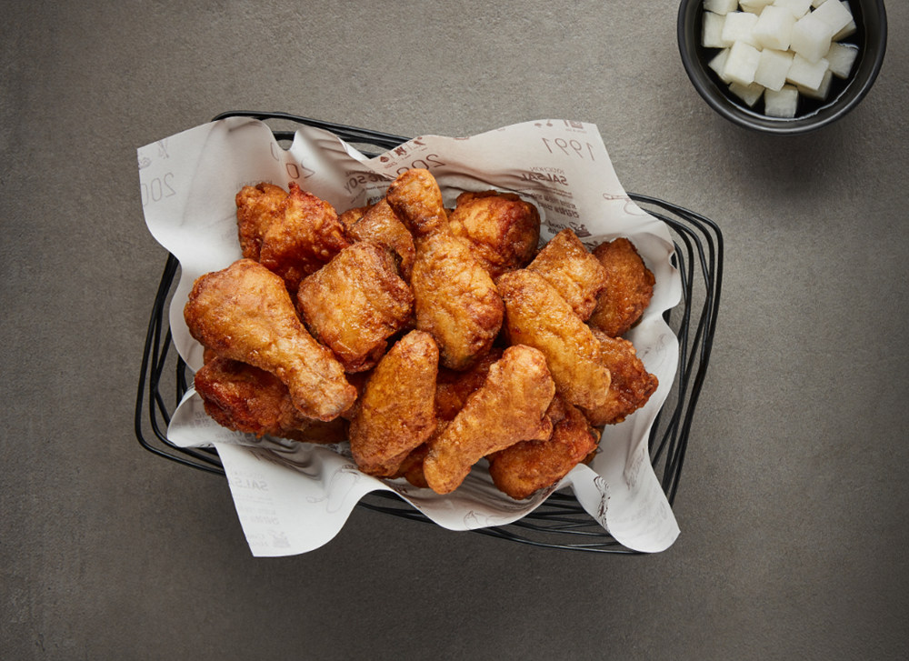

향교가 있는 마을, 교촌!
향교는 선조들이 배움의 즐거움을 탐구하던 곳으로 우리네 모든 마을에 자리한 배움터였습니다.
그 말의 의미를 담아 대한민국 곳곳에서 맛의 즐거움을 탐구하고자 1991년 구미에서 교촌이 탄생하였습니다.
교촌의 모든 것은 '정도경영'으로 출발합니다.'Real Flavor, True Story' 역시 정도경영의 정신을 이어받았습니다.
우리의 정직한 이야기가 담긴, 정직한 맛을 소비자에게 전달하겠다는 이 슬로건은 우리가 지크고 이끌어나가야 할 약속입니다.